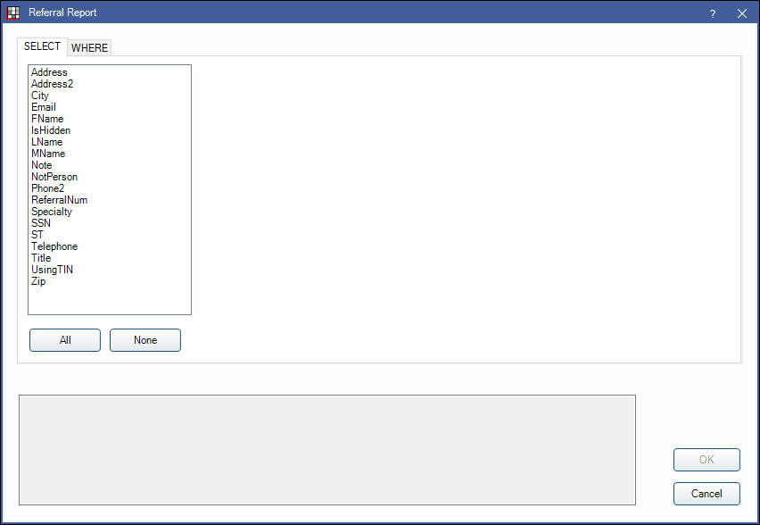
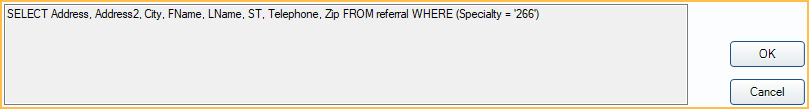

Referral - Raw Report
Write simple SQL queries using fields in the Referral table using the Referral - Raw report.
In Standard Reports, in the Lists section, click Referral - Raw.

Available options are hard coded and may not reflect all fields. For more complex queries, see Custom Query Requests.
To control user access to this report, see Report Setup: Security Permissions.
SELECT Tab

In the SELECT tab, users can choose which columns of data to include in the report (e.g., Address, Email, etc). This information is pulled directly from the Referral Table in Open Dental and most can be edited or added from Referral List. Most fields are self-explanatory. Below are fields that may need additional explanation.
- IsHidden: Referrals cannot be deleted. Indicates if the referral has been marked as hidden (e.g., is no longer in use).
- Note: Notes field of Edit Referral window. Will not display the Display Notes field
- ReferralNum: Unique system-assigned number given to each referral entry. Cannot be edited. Change the Query Format to Raw to see the ReferralNum rather than the Referral Name when running the report.
- Phone2: Other Phone number entered in Edit Referral window.
- Using TIN: Indicate if referral is using TIN instead of SSN. False indicates SSN column (if shown) is marked as a SSN. True indicates SSN column (if shown) marked as a TIN.
Ctrl + click, click and drag, or shift + click to select multiple items.
All: Click to select all available fields.
None: Click to deselect all currently selected fields.
The selected fields will be added to the statement at the bottom of the report window.
WHERE Tab
In the WHERE tab, user can select referral table fields to limit report results. See SELECT section above for fields that my need additional explanation.

Field Dropdown: Choose a referral table field to limit the report results. Fields may not exactly match the report column name.
Operator:
- LIKE: Include results from similar to the filter entered (e.g., results will include ReferralNum: 14, 140, 7142, and any other results that include the combination of characters entered).
- =: Only includes results matching the statement exactly (e.g., results would only include ReferralNum: 14).
- > : Include all results greater than the statement entered (e.g., ReferralNum 15 and above are included in results).
- <: Include all results less than the statement entered (e.g., ReferralNum 13 and lower are included in results).
- >=: Include all results greater than or equal to the statement entered (e.g., ReferralNum 14 and above are included in results).
- <: Include all results less than or equal to the statement entered (e.g., ReferralNum 14 and lower are included in results).
- <>: Include only results less than or greater than the statement entered (e.g., ReferralNum 14 is excluded from the results, but 15 and above are included and 13 and lower are included).
Text Box: Select or enter the statement filter value.
Add: After setting WHERE statement criteria, click to add the statement to WHERE statement list and the query. Multiple WHERE statements can be added to the report.
Delete Row: Select an existing WHERE statement from the list and click to remove from the list and query.
Query
The bottom section of the Referral Report window reflects the query being written as Select rows are and Where criteria are added
Click OK to run the query and view results in the User Query window.